fine LU theory check

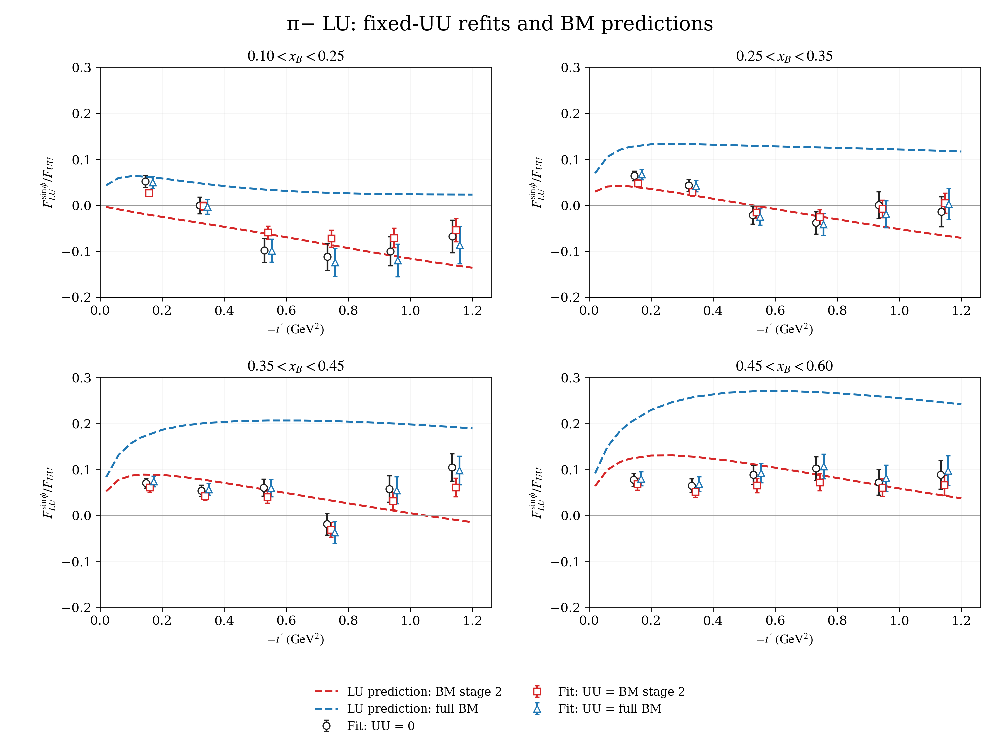
96/96 valid fits. Identical selected events, charge/polarization metadata and dilution factors across zero-UU, stage-2-UU and full-BM-UU scenarios. Marker error bars are conditional statistical uncertainties. Shifts are correlated and are not significance estimates.
Results · Bin-by-bin comparison · Shift summary · Rerun instructions

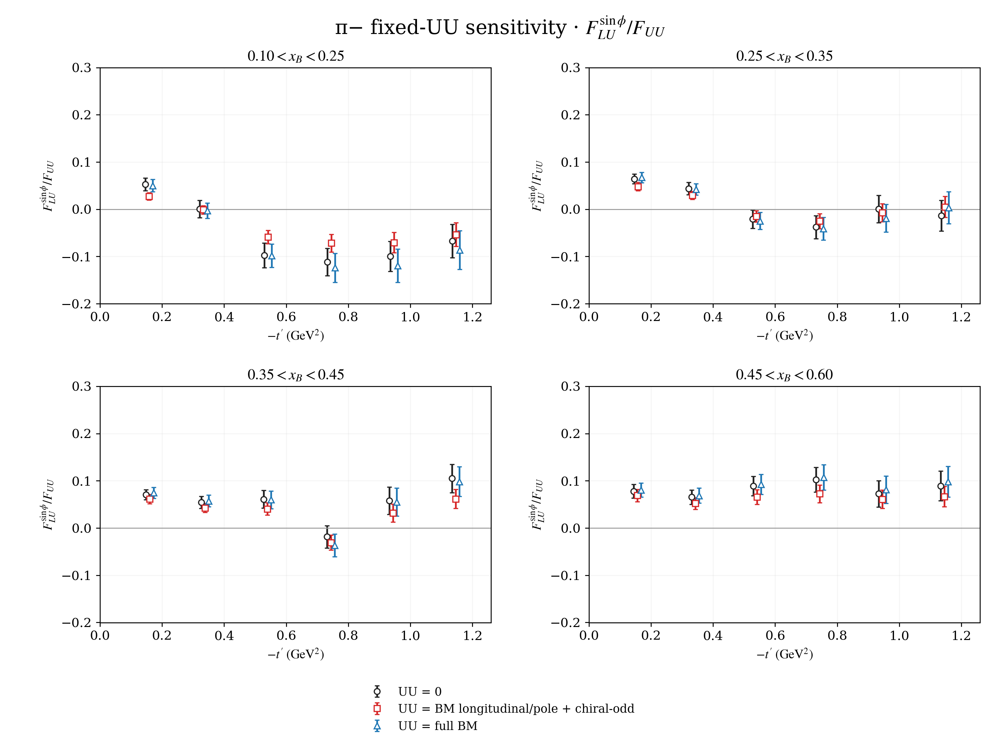
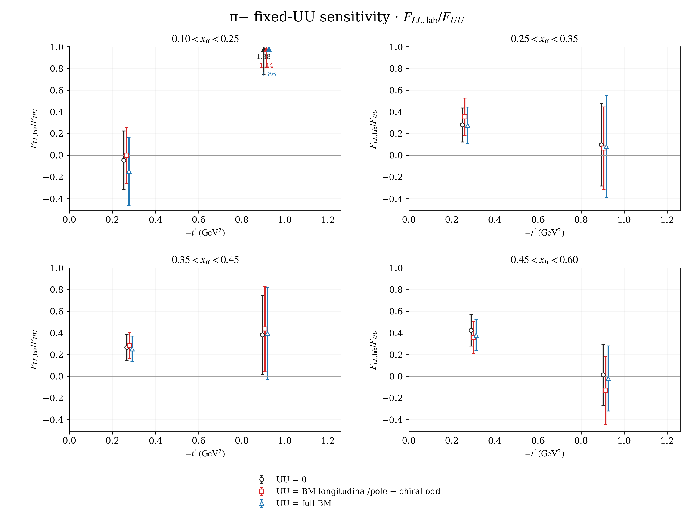
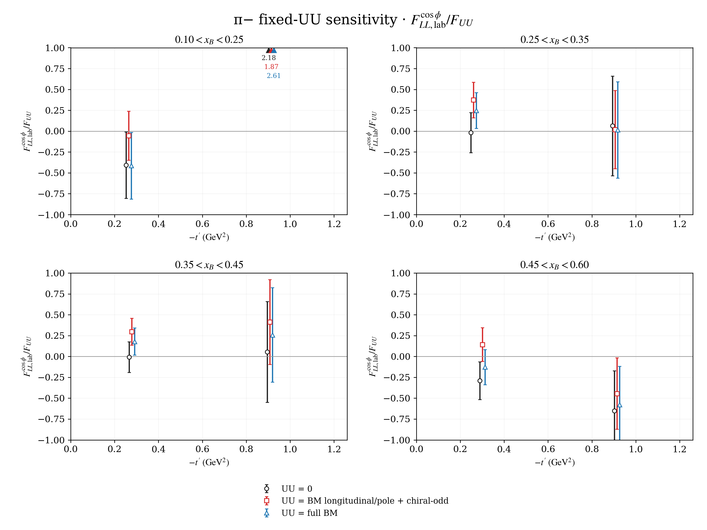
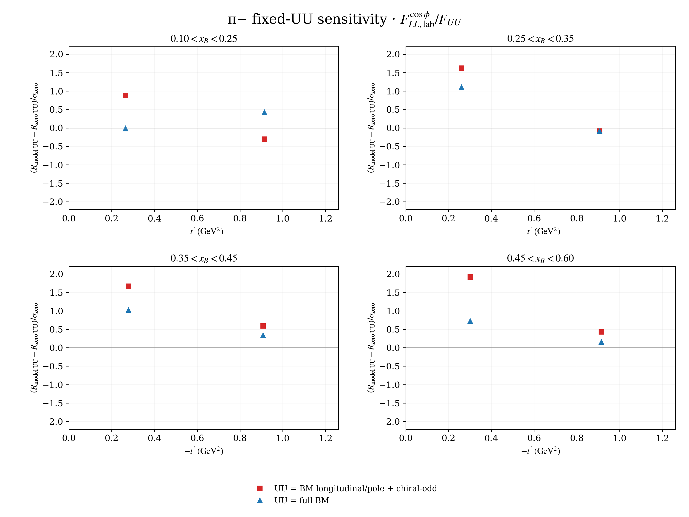
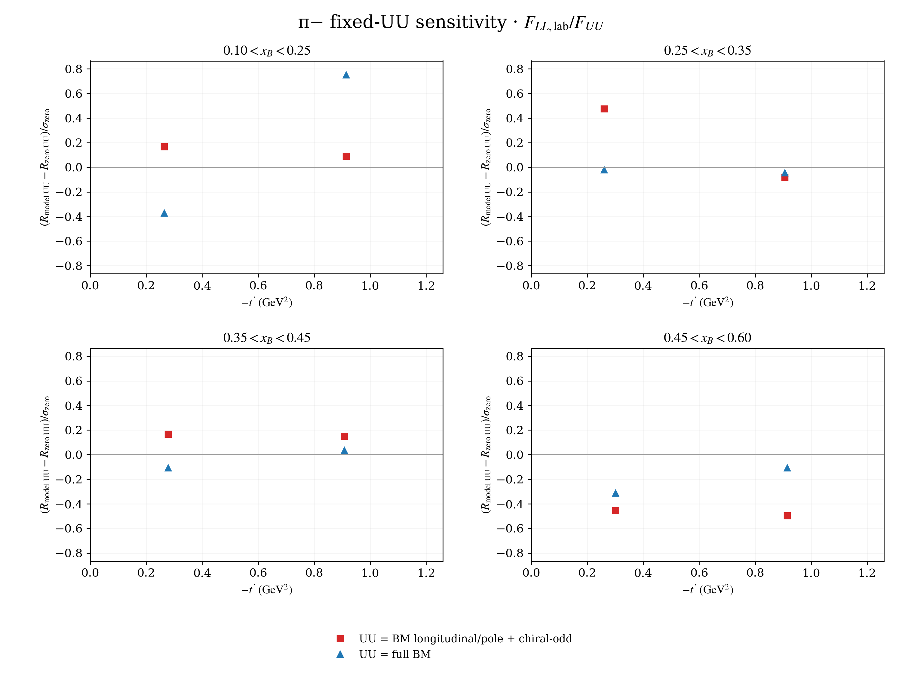
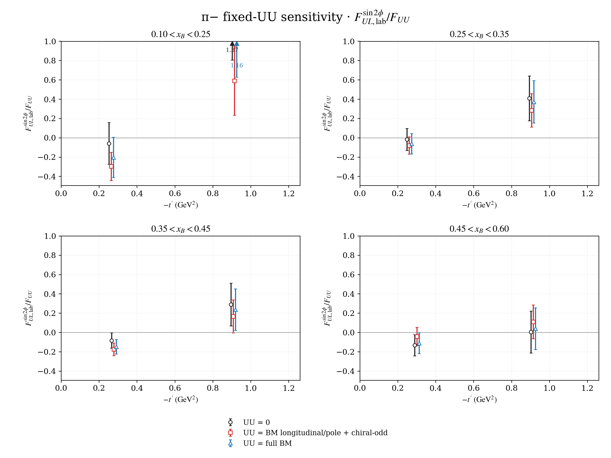
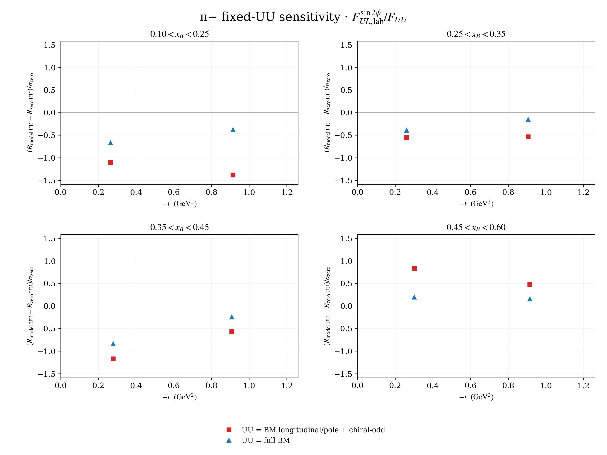
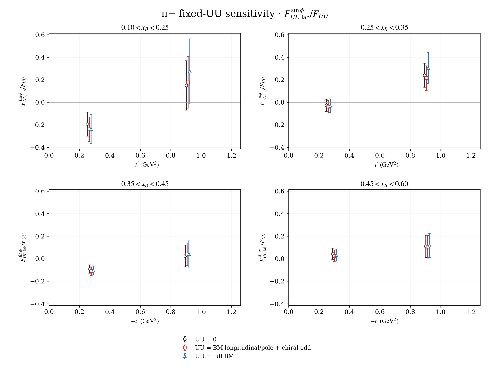
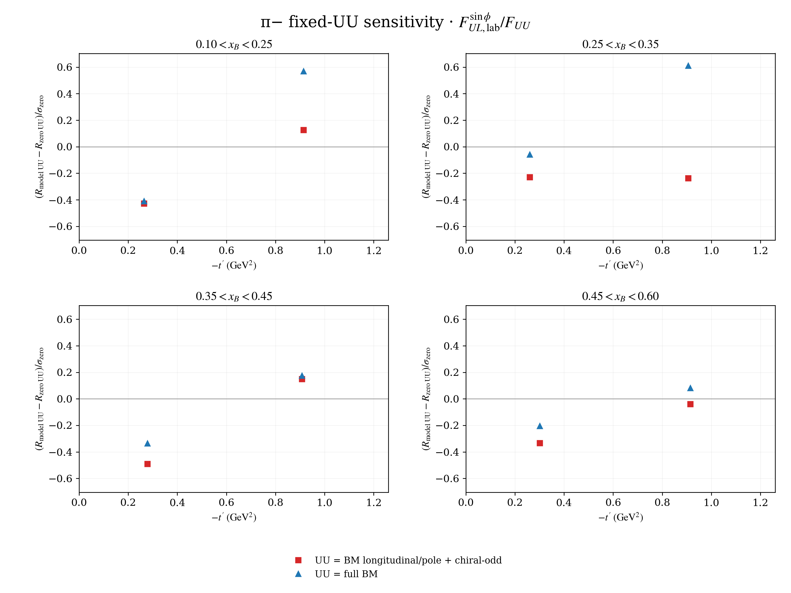
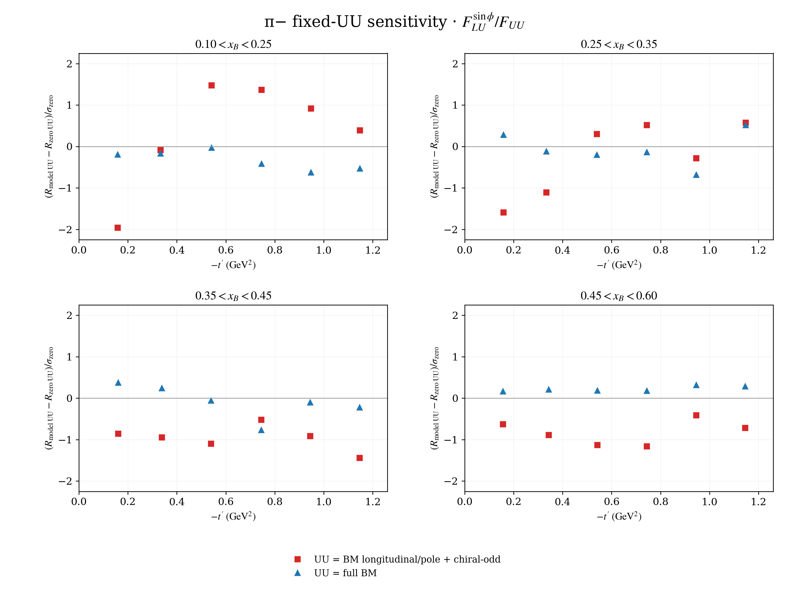